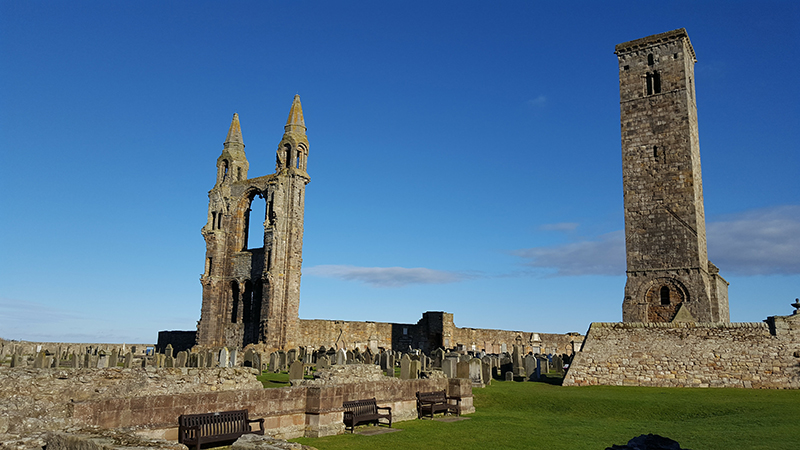

This was our local cathedral, and is the site of the longest continuing Christian worship in the UK.

This iconic old bridge is located right next to the Tower of London. We climbed across the top and were directly above the bridge when it opened up to allow boats through on the Queen's jubilee.

This ancient stone circle stands alone on the wide Salisbury plains. It was below freezing on the day we visited!

A must for all Stac students and staff visiting Scotland! The ruins are beautiful, and we visited on a rare sunny and mild day. 